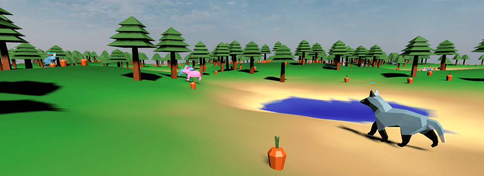
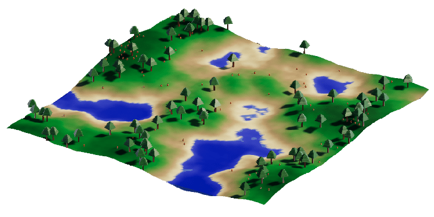
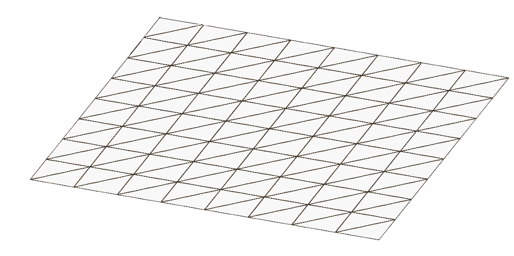
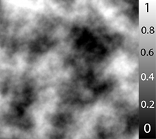
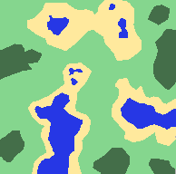
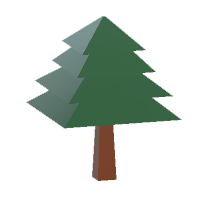
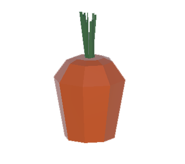
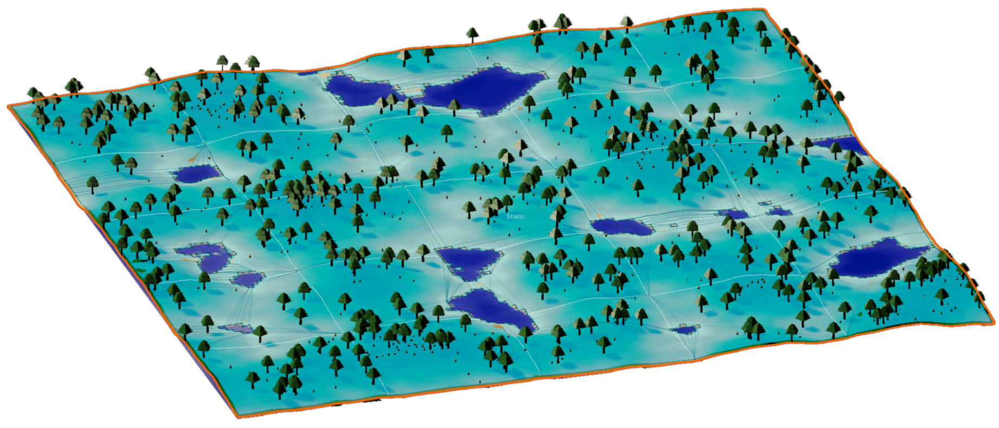
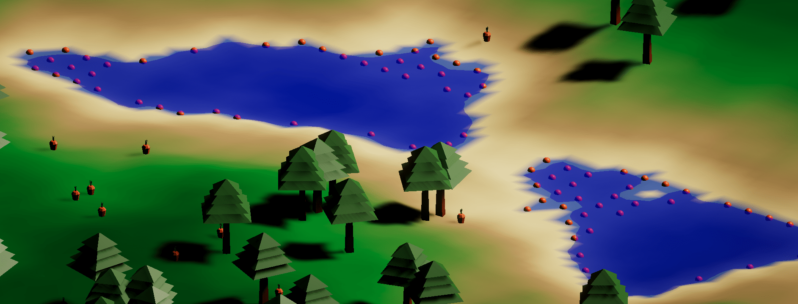
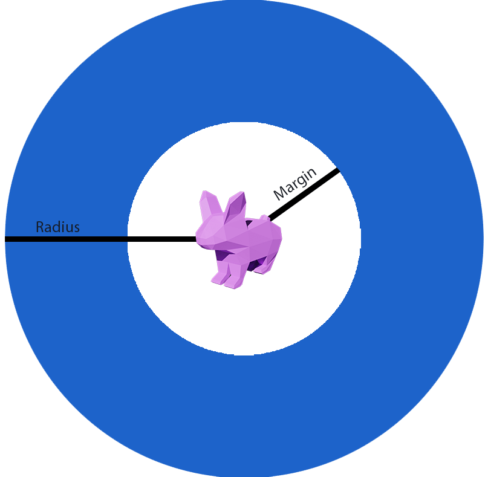

Écosystème
Contexte
Le but de ce projet était de m’améliorer dans le domaine du développement informatique. C’est alors que m’est venue l’idée de simuler un écosystème.
Mon objectif était donc de créer deux espèces animales capables chacune de reproduire un comportement simplifié, mais réaliste. J'ai opté pour les lapins et les renards,
un cas typique que l'on retrouve régulièrement dans les simulations de ce genre.
La finalité de ce projet est d'obtenir une application, où chacun peut lancer sa simulation avec ses propres conditions initiales et observer ses résultats.
C'est donc début novembre 2020 qu'ont débuté mes recherches afin d'amorcer au mieux la réalisation de ce projet à l'aide du moteur de jeu Unity .
Réalisation
Ce projet est composé de trois parties
- Génération d'un terrain
- Création des espèces animales
- Visualisation des données à l'aide de graphiques

Terrain
Il y plusieurs points importants à respecter pour que le terrain soit réaliste .
Premièrement, le relief, qui ajoutera des variations de hauteur et donnera au terrain un aspect naturel.
Ensuite les couches : elles permettent de définir les zones d'eau, de sable et de forêt.
Et enfin la flore, constituée d'arbres et de carottes.
Précisions techniques
maillage du terrain (8x8) Initialement, nous partons d'une surface plane, définie par une longueur et une largeur (cf. photo "maillage du terrain"). Le maillage est donc composé de plusieurs sommets, reliés entres eux par des segments formant des triangles.
exemple de bruit Perlin C'est en faisant varier la hauteur de chaque sommet que le terrain aura du relief. Pour ce faire nous utilisons un type de bruit spécifique, le bruit Perlin*. En superposant notre maillage avec l'image de bruit Perlin, on associe chaque sommet à une nuance de gris. C'est en fonction de cette nuance que la hauteur sera définie. Dans mon cas, les zones claires représentent les zones à forte altitude (voir image ci-contre).
bruit Perlin avec couches et couleurs Les couches sont définies en faisant des fourchettes de valeurs sur l'image du bruit Perlin. Ici, quatre couches ont été définies comme suit :
- 0 - 0.3 : eau
- 0.31 - 0.5 : sable
- 0.51 - 0.85 : plaine
- 0.86 - 1 : forêt
Il ne reste plus qu'à indiquer à Unity que nous voulons un dégradé entre les couleurs des couches et notre terrain sera enfin coloré !
Il manque seulement la flore. Pour cela, rien de compliqué. Une fois que notre terrain est généré nous passons au crible un sommet sur deux* et suivant le résultat aléatoire d'un tirage, on génère ou non l'élément de flore souhaité.
Dans mon cas, voici les probabilités d'apparition des arbres et des carottes pour chaque couche :
modèle arbre
- eau : 0%
- sable : 0.5%
- plaine : 4%
- forêt : 8%
modèle carotte
- eau : 0%
- sable : 1%
- plaine : 3%
- forêt : 30%
La flore (arbres et carottes) est générée juste avant que la simulation ne commence. Par la suite des vagues de carottes (avec les mêmes probabilités d'apparition) auront lieu toutes les 60 secondes (cette durée étant considérée dans la simulation comme un "cycle").
*Bruit Perlin : Texture générée procéduralement avec pour particularité la transition douce entre les zones claires et sombres.
*Un sommet sur deux : Il est possible d'analyser chaque sommet, cependant cette opération est relativement couteuse, de plus sauter un sommet permet aux éléments générés de ne pas entrer en collision.
Espèces animales
Lapins
Le premier animal introduit sur le terrain est le lapin. L'objectif est d'avoir une espèce capable d'interagir avec son environnement, les carottes et les étendues d'eau dans notre cas.
Les lapins possèdent trois caractéristiques principales
- une vitesse de déplacement
- un champ de vision
- un temps de consommation (pour manger et boire)
Mais surtout, ce qui détermine si un individu est vivant ou non est son niveau d'eau et de nourriture. Ces données sont chacune simulées par une valeur comprise entre 0 et 100 et diminuent progressivement en fonction du temps. Si le niveau d'eau ou de faim atteint 0, alors l'individu meurt.
Afin de survivre, l'animal doit décider quand chercher à boire et à manger. Pour ce faire, un seuil par quantité (définis par l'utilisateur) indique si le lapin a faim ou soif.
Si le niveau d'eau ou de nourriture de l'animal est inférieur au seuil correspondant, alors il ira checher l'élément adéquat.
La vidéo qui suit montre un lapin se balader, puis chercher de l'eau et de la nourriture quand il en a le besoin.
Dans cet exemple, les deux seuils sont définis à 70, et les carottes ainsi que l'eau remplissent de 20 la jauge correspondante de l'animal.
Les jauges orange et bleue indiquent le niveau de nourriture et d'eau de chaque animal.
Précisions techniques
Déplacements :
Les animaux utilisent la technologie NavMesh component fournie par Unity (module UnityEngine.AI) pour se déplacer.visualisation NavMesh
Cette technologie permet de créer un type d'agent (que nous assignons à nos lapins) possédant une taille, une vitesse et une circonférence.
Il faut ensutie créer une "NavMesh" du terrain, (voir photo ci-contre). Les zones bleues indiquent les endroits pouvant être empruntés par nos agents précédemment créés.
Il suffit maintenant de spécifier une position (en coordonnées) à un individu pour que celui-ci s'y déplace en trouvant lui même le chemin le plus court.Recherche de nourriture et d'eau :
Lorsqu'un animal boit, il interagit avec une sphère (rendue visible sur la photo ci-contre) symbolisant un point d'eau. (une sphère est créée dès lors qu'un sommet se trouve avec une valeur de bruit Perlin entre 0.22 et 0.25)visualisation des points d'eau
Une liste contient toutes les carottes présentes sur le terrain, il en est de même pour les points d'eau.
Lorsqu'un animal désire trouver la carotte ou le point d'eau le plus proche, il parcourt la liste en question et calcul la distance* entre l'élément souhaité et sa propre position. Si la distance est comprise dans son champ de vision, l'élément sélectionné sera la cible de l'animal. Cependant, si un élément suivant dans la liste se trouve être plus proche de l'animal, il sera alors la nouvelle cible.
Maintenant que chaque animal est capable de survivre, nous pouvons définir les conditions de reproduction pour chaque individu.
Le principe est similaire à celui de la nourriture et de l'eau. La possibilité de se reproduire est définie par deux seuils : à nouveau, un sur la jauge de nourriture et un sur celle d'eau.
Si le niveau d'eau et celui de nourriture sont supérieurs à leurs seuils respectifs, l'animal va chercher dans son champ de vision un lapin du sexe opposé, lui aussi apte à se reproduire.
Une fois que deux lapins se sont reproduis, la femelle sera alors porteuse* et donnera naissance à plusieurs lapereaux une fois le temps de gestation écoulé.
La prochaine vidéo montre premièrement la reproduction de deux lapins et ensuite la naissance de lapereaux, deux mâles dans notre cas.
*Porteuse : Le nombre d'animaux par portée est aléatoire entre un minimum et un maximum (tous deux inclus) définis par l'utilisateur.
*Calcul de la distance : Pour ce faire, j'utilise la fonction Vector3.Distance de Unity
À partir de ce stade, le seul facteur capable de réguler la population de lapins est le nombre de carottes disponible. Il est temps pour les renards de faire leur apparition.
Renards
Les caractéristiques et actions du renard sont similaires à celles du lapin. À la différence que pour se nourrir, il chasse des lapins.
Pour rendre les choses plus réalistes, les lapins vont désormais fuir les prédateurs à proximité.
Précisions techniques
Déplacements :
Lorsqu'un animal n'a pas le besoin de boire ou manger ni la capacité de se reproduire il se déplace aléatoirement.représentation des déplacements aléatoires
L'idée est de générer une position ni trop loin, ni trop proche de la position actuelle de l'animal.
Voici la fonction utilisée (code en langage C#) :Le type de variable "Vector3" est une structure propre à Unity contenant en première position, une position X, en seconde une position Y (hauteur), et enfin une position Z.Vector3 FindPosInCircle(Vector3 centre, float radius) { Vector3 pos = new Vector3(); float angle = Random.value * Math.Pi; float margin = 1.5f; float norme = Random.Range(margin, radius); pos.x = centre.x + (norme * Mathf.Cos(angle)); pos.z = centre.z + (norme * Mathf.Sin(angle)); return pos; }
La fonction Random.value va générer un nombre entre 0 et 1. On définit alors un angle en radians en multipliant cette valeur par 2π.
On genère ensuite une norme comprise entre la distance minimale et maximale du déplacement de l'animal.
La variable "centre" correspond à la position actuelle de l'animal.
On retrouve la distance sur l'axe X en multipliant la norme avec le cosinus de l'angle, puis on l'aditionne à la position (toujours sur l'axe X) de l'animal.
On réalise la même opération pour l'axe Z mais cette fois-ci, avec le sinus.
Conclusion sur les espèces animales.
Afin de représenter le comportement de nos espèces de manière synthétique, voici un algorigramme reprennant l'intégralité des notions précédentes.
Un choix personnel a été fait entre le besoin de nourriture et d'eau.
Le schéma montre que le besoin d'eau de l'animal est prioritaire prioritaire par rapport à sa faim.
Le déplacement aléatoire possède 2 utilités.
Premièrement, quand l'animal n'a besoin ni d'eau ni de nourriture et n'est pas apte à se reproduire, il va se déplacer aléatoirement jusqu'à ce qu'un besoin primaire survienne.
Ensuite, imaginons que notre animal éprouve le besoin de s'hydrater mais qu'aucun point d'eau n'est à proximité. L'animal va alors se déplacer aléatoirement sur le terrain puis analyser à nouveau si il peut satisfaire son besoin. Ceci lui évite de se laisser mourir car il ne trouve pas l'élément désiré.
Graphique
Il est relativement aisé de suivre l'évolution des animaux quand ils sont peu nombreux, mais dès lors qu'ils commencent à se reproduire on peut facilement s'y perdre.
C'est pourquoi, situé en bas de l'affichage, se trouvent le nombre actuel de carottes, lapins et renards présents dans la simulation.
De plus, des informations complémentaires sont affichées (comme la répartition adulte / enfant) au passage de la souris sur ces zones de texte.
Une vue graphique est disponible pour suivre l'évolution de la simulation avec le plus détails possible.
Celle-ci est composée de 4 graphiques, chacun capable d'afficher 4 données en fonction du temps.
Chaque graphique est entièrement personnalisable :
- Données selectionnées
- Apparence (couleur, taille points, grille en arrière plan, ...)
- Moyenne automatique ou manuelle des données
- Sauvegarde et chargement de la disposition de la vue graphique
Les données pouvant être affichées sont les suivantes :
- Le nombre de carottes
- Le nombre de lapins et de renards
- Le nombre de décès
- Les causes de décès (déshydratation, famine, chassé)
Précisions techniques
Mesure des informations :
Comme mentionné précédemment, les lapins, renards et carottes sont stockés dans des listes. C'est grâce à elles que nous pouvons obtenir une multitude d'informations sur chaque élément présent dans la simulation.
Il y a 10 prises de données par cycle, autrement dit, une toute les 6 secondes, car un cycle dure une minute.
A chaque prise de données, on recueille les informations comme par exemple le nombre de lapins ou de carottes actuel afin de les garder en mémoire.
Graphiques :
Unity ne fournit pas d'outils pour dessiner des graphiques, j'ai ainsi après quelques recherches sur Internet réussi à reprendre des productions existantes (voir "Sources") et les adapter à mes besoins.
Il faut premièrement délimiter la zone de chaque graphique.
Dans mon cas, chaque graphique fait 33% de la longueur de l'écran sur l'axe horizontal (~633 pixels quand la résolution est de 1920 par 1080 pixels au format 16:9) et un un peu moins de 40% sur l'axe vertical (soit ~420 pixels).On place ensuite les points sur la surface précédemment délimitée. Les points sont répartis régulièrement suivant l'axe X, soit sur une longueur d'environ 633 pixels dans mon exemple.
Pour l'axe Y, on cherche d'abord la valeur la plus grande dans la liste qui nous servira de référence. On divise alors la valeur de l'élément à placer par cette valeur maximum. Le résultat sera entre 0 et 1. Pour afficher le point dans la zone de notre graphique on multiplie cette valeur par la hauteur du graphique (moins une legère marge afin de ne pas afficher de point sur la bordure de l'écran).
Conclusion
Il m'a fallu un peu moins de 6 mois pour obtenir une permière version stable, comprenant tout ce qui a été cité auparavant.
Ce projet a été énormément formateur sur de nombreux points.
La gestion
C'est à ce jour (mai 2021), mon plus gros projet personnel. Pour ne pas m'y perdre il a été important de bien structurer et décomposer chaque partie afin d'être le plus efficace et ordonné.
La programmation
J'ai découvert de nombreuses fonctionnalités comme la génération de maillage customisé ou bien l'utilisation de NavMesh. J'ai également pu renforcer certaines connaissances telles que le calcul vectoriel et l'utilisation de classes pour les animaux.
Le plus important est la structure du code. Elle est à ce jour loin d'être parfaite, mais j'ai pu constater son importance et m'exercer à le rendre le mieux possible.La modélisation
Malgré mon expérience avec le logiciel Blender, modéliser puis animer un animal avec le moins de détails possible a été une complète découverte. J'en garde un très bon souvenir.
L'interface utilisateur
L'objectif est de la rendre compréhensible instantanément, ce qui m'aura pris de nombreuses heures à comprendre puis réaliser. Cela peut paraître simple, mais c'est en réalité un véritable challenge.
J'ai dû sortir de ma zone de confort et redoubler de créativité pour tenter de rendre cette quantité d'informations assimilable par n'importe quel utilisateur.
Le plus gros étant désormais achevé, je compte perfectionner les derniers détails et corriger les bugs qui seraient présents avant de considérer ce projet comme complètement terminé.
Sources
Inspirations
Sebastian Lague | Coding Adventure: Simulating an Ecosystem : https://www.youtube.com/watch?v=r_It_X7v-1E
Primer | Simulation de la la sélection naturelle : https://www.youtube.com/watch?v=0ZGbIKd0XrM
Terrain
Sebastian Lague | Procedural Landmass Generation (E01: Introduction) : https://www.youtube.com/watch?v=wbpMiKiSKm8
Catlike Coding | Procedural grid : https://catlikecoding.com/unity/tutorials/procedural-grid/
Brackeys | MESH GENERATION in Unity - Basics : https://www.youtube.com/watch?v=eJEpeUH1EMg
Brackeys | PROCEDURAL TERRAIN in Unity! - Mesh Generation : https://www.youtube.com/watch?v=64NblGkAabk
Graphiques
Code Monkey | Unity Tutorial - Create a Graph : https://www.youtube.com/watch?v=CmU5-v-v1Qo